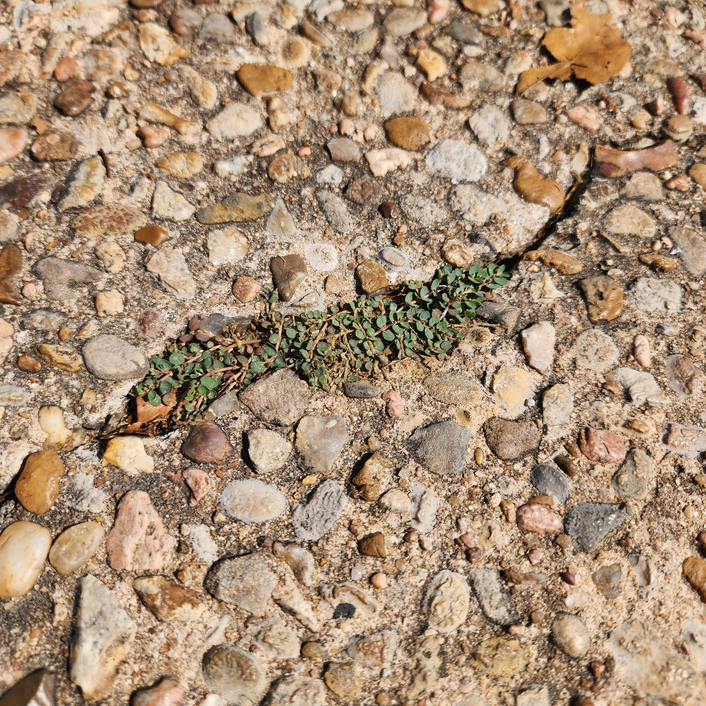

Spotted Spurge

The Spotted Spurge is prolific in even the most challenging of situations. Its rapid seed production allows it to establish itself and hold its ground, even in difficult terrain like sidewalks and paths.
Scientific Name: placeholder
Lifespan: placeholder
Native to: placeholder